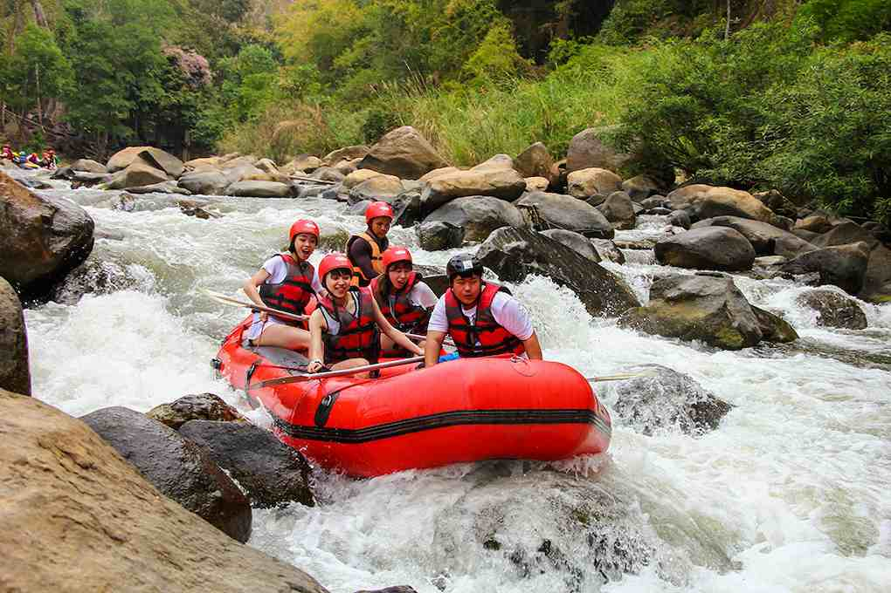
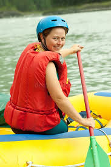

Our rafting company exists to create joyful, safe, and unforgettable water adventures that connect people with nature and each other. Our mission is to guide every guest through flowing rivers with skill, care, and respect for the environment, turning each trip into a meaningful experience. Our creed is simple: paddle with integrity, protect the waters we travel, and treat every rafter like family. Our motto, “Ride the River, Share the Joy,” reflects our commitment to adventure, unity, and lasting memories on every journey.


Splash Rafters
History
Our rafting company began as a small dream shared by a group of friends who found peace and excitement on the river after long days of work. What started with borrowed paddles and weekend trips slowly grew as word spread about the care, laughter, and safety we brought to every journey. Over the years, we expanded our routes, trained skilled guides, and welcomed families, students, and adventure seekers from many places. Though we have grown, our heart remains the same: a deep love for the water, respect for nature, and a passion for helping others experience the river’s beauty in a fun, safe, and unforgettable way.